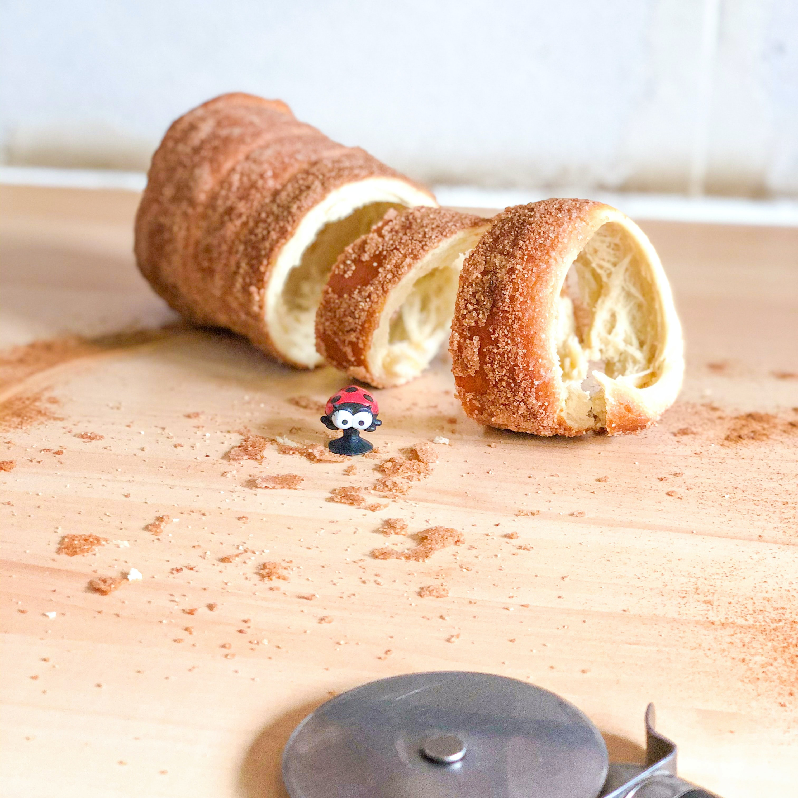
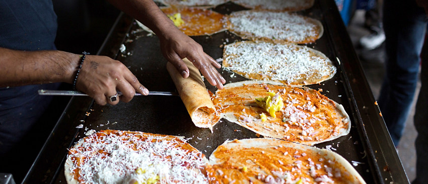
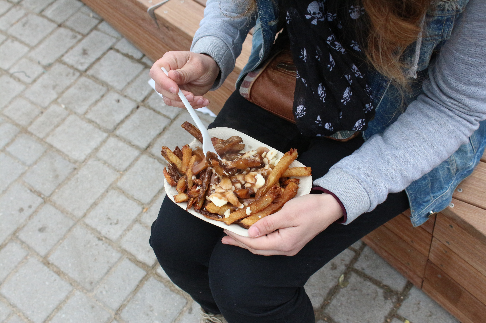
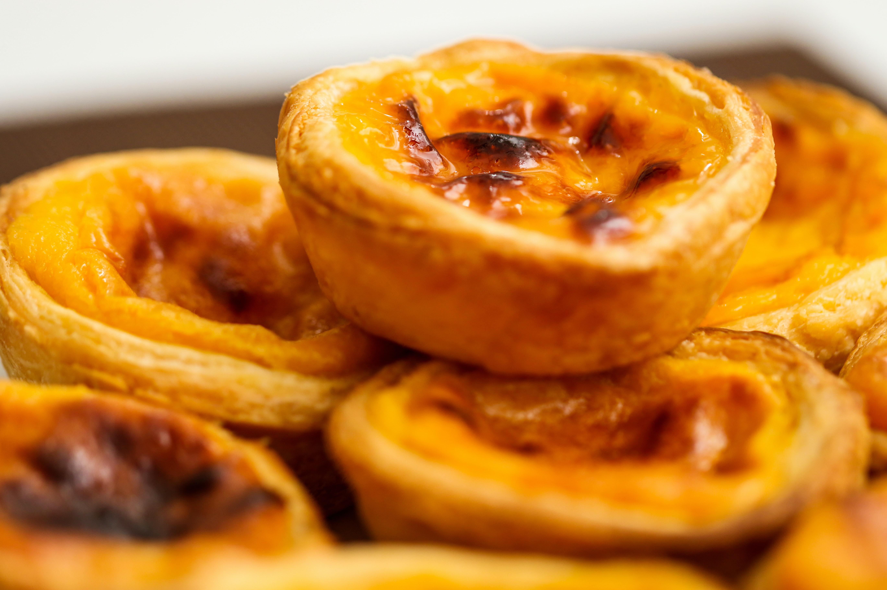
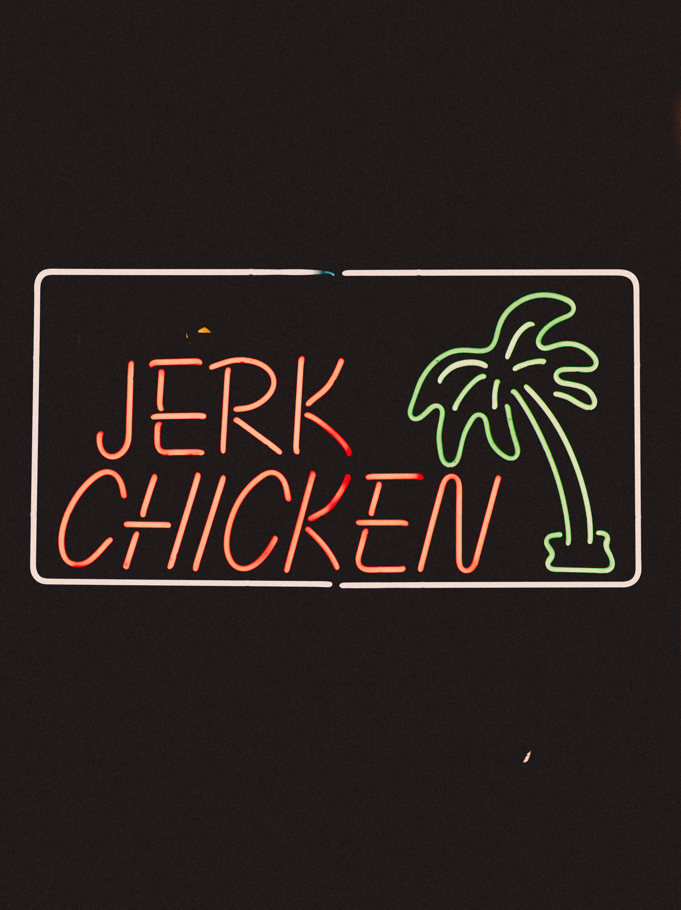
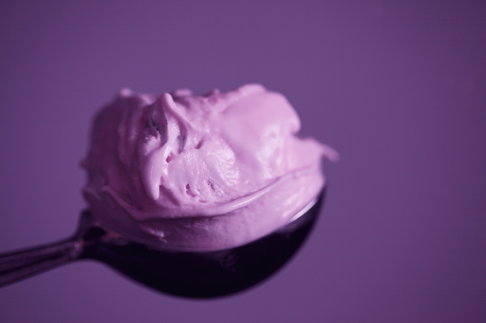
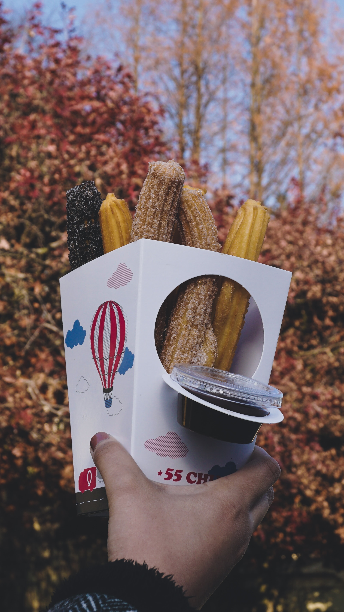
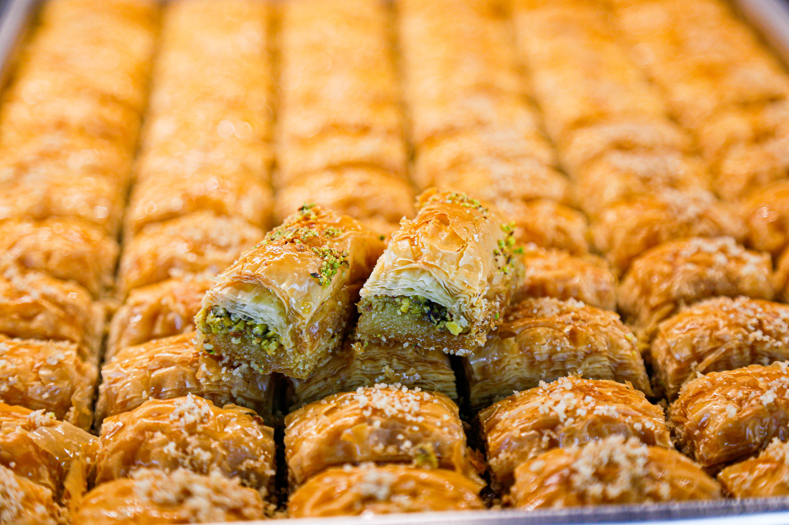

Cheap, authentic and supremely instagrammable – we LOVE street food and we know you guys do too. Eating street food is a not only a great way to eat well on a backpacker’s budget, it also gives you the opportunity to chat to locals and find out more about the dishes and traditions behind them.
There are so many different street foods out there, in every country, region and city. To help you on your foodie quest, we’ve put together a guide to the most iconic street foods from around the world that you must try – from falafel in Israel to currywurst in Germany – you won’t believe what you can find for under a fiver. Think of this as a starting point for your culinary explorations, and be sure to share your own must-eat street food suggestions in the comments below!
1. Chimney Cake in the Czech Republic
Trdelník aka “chimney cake” is both a novelty photo opp and a sweet treat all rolled into one! These spiral-shaped donuts are made by wrapping the batter around a large spit, which is then cooked over a grill, rolled in sugar and served with lashings of Nutella. What’s not to love!? Guaranteed to warm your cockles on a cold Czech morn.
2. Masala Dosa in India
The humble masala dosa is indigenous to the Southern states of India and usually comes served with sambar and chutney. It’s cheap, quick and high in carbohydrates. Perfect for hungry adventurers on the go.
3. Poutine in Canada
And just like that, your hangover is cured! Poutine is a lavishly indulgent treat, originating in Quebec and made up of fries, cheese curds and gravy. It might not be the first thing that comes to mind when you think of street foods from around the world, but it’s not to be missed. The word “poutine” is Québécois slang for a “mess” but there’s no need to worry about how it looks when it tastes this good!
4. Currywurst in Germany
Perhaps not the most sophisticated dish by sight but certainly not the wurst (lolololol). When you first touch down in Germany you need to make a beeline for this traditional dish, which is essentially a ketchup/curry sauce hybrid with chopped pork sausage and fries. Supremely tasty and ever so cheap!

5. Pastel de Nata in Portugal
There’s nothing raw or clean about these bad boys, but dammit they’re worth falling off the wagon for. This is Portugal’s answer to the custard tart and the main ingredients are sugar, egg yolks and butter. But because they’re not huge, it’s probably fine for you to have 3 in one sitting. At least that’s what we tell ourselves.
6. Jerk Chicken in Jamaica
A smoky staple of the Jamaican street food scene, this iconic dish is traditionally served from jerk ‘huts’ with a side of fiery rice and peas. The name ‘jerk’ comes from the jerking or poking of the meat with a sharp object to get the most out of the flavour. You’ll smell the spicy-sweet marinade over the native pimento wood from miles around when these bad boys are cooking!
7. Halo Halo in the Philippines
Well, HELLO there halo halo. Definitely one of the most instagram-able street foods from around the world. Translated into English as “mix mix”, the ingredients are up for debate but usually consist of shaved ice, fresh fruit, ice cream, a jelly-like object, a crunchy substance similar to Rice Krispies, and evaporated milk. A tasty treat for kids both big and small!
8. Pad Thai in Thailand
Ubiquitous across the whole of Thailand as a quick and filling meal, this is one of the originals when it comes to street food from around the world. What’s most fascinating about Pad Thai, however, is that it probably isn’t even traditionally Thai. Noodles, stir-fry, and, especially, ‘noodle stir-fries’ are quintessentially Chinese…oo-err. Whatever the origins, this is one street food dish you must not miss when you visit Thailand.

9. Churros in Spain
One of the naughtiest but also one of the tastiest street foods from around the world, churros are a MUST for hungry backpackers travelling through Spain. As if these freshly fried donut sticks weren’t delicious enough, they come served with the most divine melted chocolate, either drizzled on top or in a pot for dunking.
10. Baklava in Turkey
Made from many layers of pastry, oozing with syrup and pistachios and often crafted from a carefully guarded family recipe, Baklava is one epic sugar rush you MUST experience when you visit Turkey. A bag of these heavenly parcels is the perfect accompaniment for watching one of Istanbul’s famous sunsets with friends.
